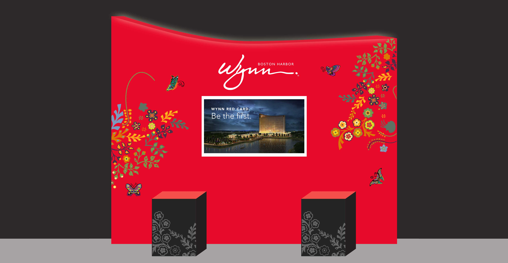
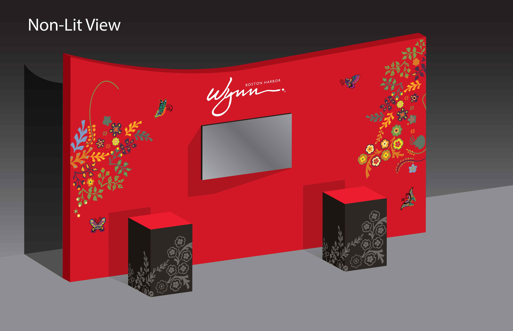
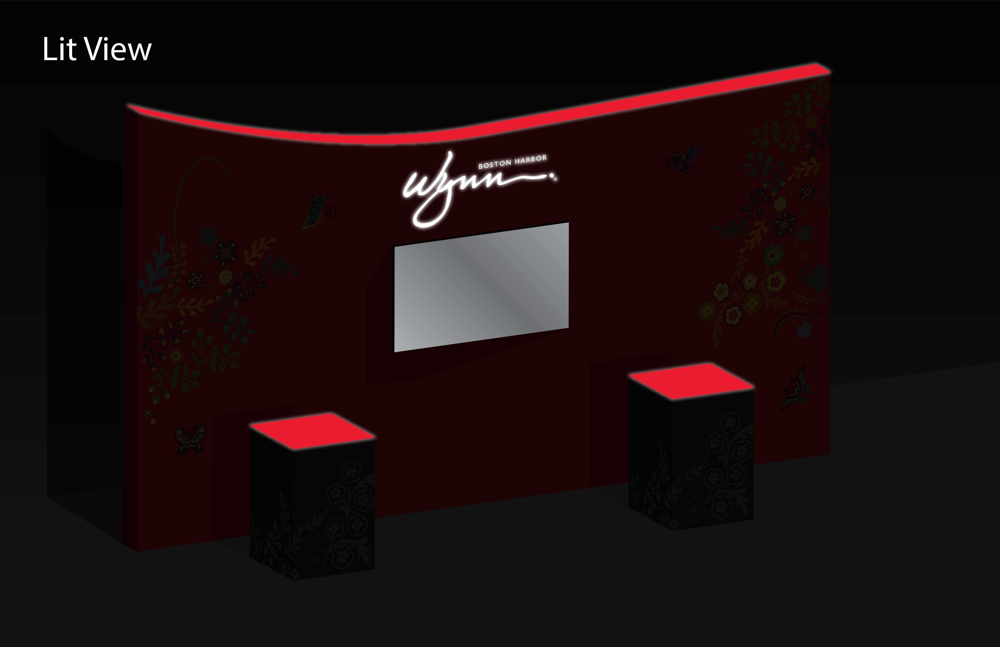
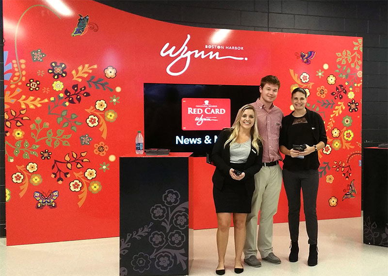

Bringing a casino opening to life at TD Garden
For the grand opening of Wynn Boston Harbor in June 2019, the casino needed a branded presence at TD Garden to attract stadium-goers and drive sign-ups for their Red Card membership program.
Working within Wynn's existing brand, we designed a kiosk and accompanying stands that felt unmistakably Wynn. Their signature red, floral patterns, and butterfly motifs gave us a rich visual language to work with — the challenge was translating it into something that could hold its own in a stadium environment.
The kiosk shape drew from the architecture of Wynn Boston Harbor itself. Lighting placed at the top ensured visibility after dark. Every detail was considered to make the space feel like an extension of the brand, not just a promotional booth.


The kiosk drew consistent attention from passersby and gave Wynn's staff an effective platform to promote the Red Card program. Sign-ups were strong, and the installation gave the casino a memorable first impression in Boston before the doors even opened.

Working within an established visual system isn't a constraint — it's a creative challenge. Understanding what makes a brand feel like itself, and extending that into a new format, is something I genuinely enjoy.
A high-traffic space demands different thinking. Placement, scale, and lighting all factor into whether a design gets noticed or gets ignored.